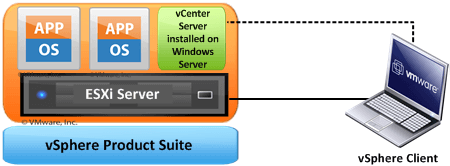

最近在看 VMware 一直没有搞清楚这几个产品之间的区别和联系。正好在网上搜索到一个好文，翻译下来。
本文翻译自：http://www.mustbegeek.com/difference-between-vsphere-esxi-and-vcenter/
最近对 VMware 虚拟化解决方案有很多的疑惑。毫无疑问，VMware是虚拟化解决方案的老大。但是第一次接触 Vmware 虚拟化平台的人面对 VMware vSphere 和他的组件经常感觉到疑惑。所以今天我将解释下 vSphere 和他的组件。能弄清楚 vSphere，EXSi 和 vCenter 的区别是很重要的。为了更深入了解和体验 vSphere, 你还可以在 VMware Workstation 中安装 vSphere。
VMware Inc. 是一家软件公司。它开发了许多产品，尤其是各种云解决方案 。他的云解决方案包括云产品，数据中心产品和桌面产品等。
vSphere 是在数据中心产品下的一套软件。vSphere 类似微软的 Office 办公套件，Office 办公套件包含了许多软件如Word, Excel, Access 等。和 Office 一样，vSphere 也是一个软件的集合。他包括了 vCenter, ESXi 和 vSphere 等。所以，这些软件联合起来就是 vSphere。vSphere 不是一个你可以安装使用的软件。它只是一个包含其它组件的集合。
ESXi, vSphere client 和 vCeneter 都是 vSphere 的组件。ESXi是 vSphere 中最重要的一个组件。ESXi 是虚拟化服务。所有的虚拟机都是运行在 ESXi 服务上面。为了安装，管理和访问这些虚拟机，你需要另外的 vSphere 套件，也就是 vSphere client 或 vCenter。vSphere client允许管理员访问 ESXi 服务并管理虚拟机。vSphere client 是安装在客户机(也就是管理员的笔记本)上面。vSphere client 被用来连接 ESXi 服务器和管理任务。那么什么是 vCenter?为什么虚拟它?尝试下在没有 vCenter server 的时候，只用 vSphere client 来克隆存在的虚拟机。
vCenter server 和 vSphere client 很像，但是它和功能更加强大。vCenter server 是安装在 Window 服务器或 Linux 服务器里面。VMware vCenter server 是一个中心化的管理应用。你可以通过它管理所有的虚拟机和 ESXi 物理机。vSphere client 可以通过访问 vCenter Server 来管理 EXSi 服务器。vCenter server 是一个企业级的产品，有许多企业级的功能，像 vMotion, VMware High Availability, VMware Update Manager 和 VMware Distributed Resource Scheduler(DRS)。你可以方便的通过 vCenter server 克隆存在的虚拟机。所以，vCenter 也是 vSphere 套件的一个重要组成部分。你需要单独购买 vCenter 的 license。

这个图描述了 vSphere 套间之前的关系。vSphere 是一个产品套件，ESXi 是安装在物理机上面的服务。vSphere Client 安装在笔记本或 PC 机上面，用来访问 ESXi 服务并安装和管理上面的虚拟机。vCenter Server 安装在了 ESXi 服务器的虚拟机里面。vCenter 也可以安装在单独的物理服务器上面，但是虚拟化不应该更好么? vCenter 服务通常用在有很多 EXSi 服务和许多虚拟机的大规模环境中。vCenter 也可以使用 vSphere client 来管理。所以 vSphere client 可以在小环境中直接管理 ESXi 服务。也可以在大规模的环境中，通过 vCenter 服务间接管理 ESXi 服务。
你可以在你的电脑中安装 vSphere来体验这些技术。更多信息，请参看VMware 官网。
点击「阅读原文」，能看到更多链接。